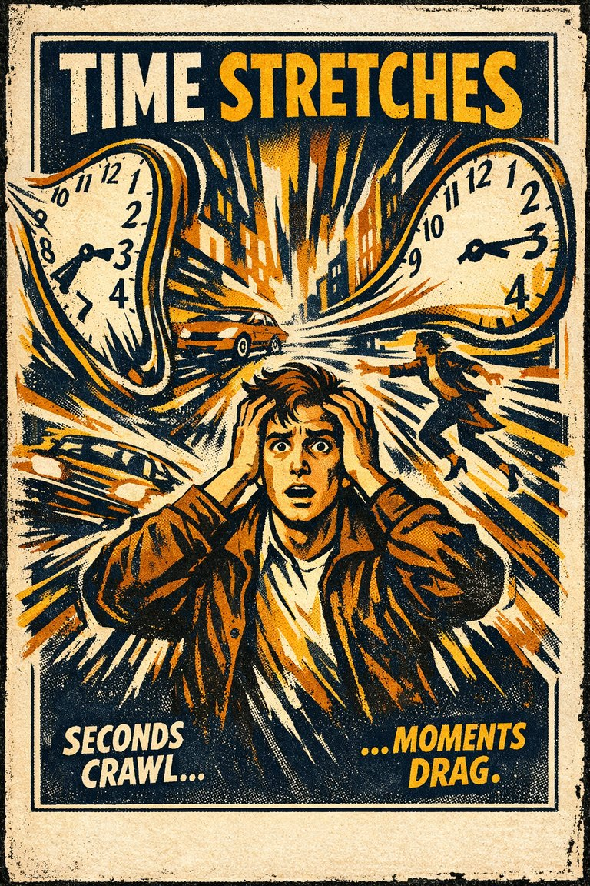
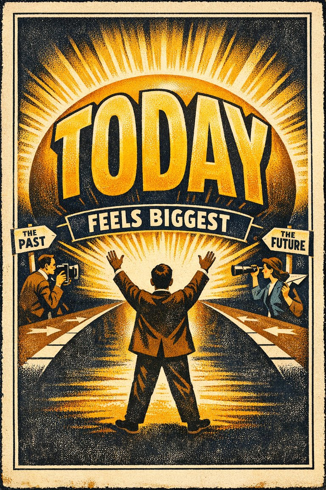

Aesthetic–usability effect
The tendency to treat attractive things as more usable than they really are.
EstimationAssociation

Cognitive Biases
A practical cognitive-bias site with clear definitions, learning paths, assessments, self-audits, and debiasing tools.
Pattern
The mind overweights resemblance, vividness, proximity, or intuitive linkage.
This is the cross-cutting layer that helps the site feel more like a real reference and less like a flat list.
The tendency to treat attractive things as more usable than they really are.

The inclination to presume the purposeful intervention of a sentient or intelligent agent.

The tendency to avoid options when their probabilities are unclear, even if the unclear option may not actually be worse than the familiar one.

The tendency to answer a hard judgment question by unconsciously substituting an easier one.

The tendency to give excess weight to the opinion of a high-status or authoritative source independent of whether the source has earned that weight on the specific issue.

The tendency to depend excessively on automated systems which can lead to erroneous automated information overriding correct decisions.

A belief becoming more plausible through repeated public repetition, social uptake, and feedback.

The tendency to judge frequency, risk, or importance by how easily examples come to mind.

The tendency to remember a scene as having included more surrounding space than was actually shown.

The retention of few memories from before the age of four.

The perception of contradictory information and the mental toll of it.

The tendency to combine or compare research studies from the same source, or from sources that use the same methodologies or data.

The tendency to behave more compassionately towards a small number of identifiable victims than to a large number of anonymous ones.

The tendency to assume that specific conditions are more probable than a more general version of those same conditions.

The tendency to remember past attitudes or behavior as more consistent with the present than they really were.

The enhancement or reduction of a certain stimulus's perception when compared with a recently observed, contrasting object.

The tendency to mistake an old memory or borrowed idea for a new original thought.

The tendency for recall to weaken when the original context or cues are missing.

The tendency to favor the preselected or default option simply because it is already positioned as the path of least resistance.

Just as losses yield double the emotional impact of gains, dread yields double the emotional impact of savouring.

The neglect of the duration of an episode in determining its value.

A bias in which the emotion associated with unpleasant memories fades more quickly than the emotion associated with pleasant ones.

The tendency to mistake imagination, suggestion, or reconstruction for an actual memory.

Initial beliefs and knowledge which interfere with the unbiased evaluation of factual evidence and lead to incorrect conclusions.

The tendency to treat ideas or options that feel easier to process as better or truer.

The tendency for the same underlying information to produce different judgments depending on how the options or outcomes are described.

The tendency to forget information that can be found readily online by using Internet search engines.

The tendency for decisions to be more risk-seeking or risk-averse than the group as a whole, if the group is already biased in that direction.

The tendency for groups to protect harmony or momentum at the cost of critical evaluation and dissent.

The tendency for one salient positive or negative impression to spill over into unrelated judgments about a person, product, or institution.

The tendency to underestimate the influence of visceral drives on one's attitudes, preferences, and behaviors.

The tendency to remember humorous material more easily than comparable non-humorous material.

The tendency to prefer smaller immediate rewards over larger later ones, even against one's longer-term interests.

The tendency to believe you understand how something works more deeply than you actually do, especially until you are forced to explain the mechanism step by step.

The tendency to believe that a statement is true if it is easier to process, or if it has been stated multiple times, regardless of its actual veracity.

The tendency for response speed to reflect how strongly ideas are linked in memory.

The phenomenon whereby learning is greater when studying is spread out over time, as opposed to studying the same amount of time in a single session.

The tendency for memories to lose some details while exaggerating others as they are retold over time.

The tendency for deeper, more meaningful encoding to produce stronger memory than shallow encoding.

The tendency for losses or giving something up to feel worse than equivalent gains feel good.

Being shown some items from a list makes it harder to retrieve the other items.

Memory becoming less accurate because of interference from post-event information.

The tendency for the last items in a list to be remembered better when heard than when read.

The improved recall of information congruent with one's current mood.

The tendency to treat a prior good deed as permission for later worse behavior.

The tendency to give bad news, threats, criticism, and losses more psychological weight than equally sized positives.

The tendency to ignore or drastically underuse probability information when making decisions under uncertainty.

The tendency to remember less of the person who spoke just before one's own turn.

The tendency to avoid a previously optimal choice after a bad outcome, even when the situation is unchanged.

The tendency for seeing some items from a list to make the remaining items harder to recall.

The tendency to remember an experience mainly by its peak moment and its ending.

The Perky effect, where real images can influence imagined images, or be misremembered as imagined rather than real.

The tendency for traumatic memories to recur unwantedly after the event is over.

The tendency to remember pictured information better than the same information presented only as words.

Older adults' tendency to favor good over bad information in their memories.

The tendency to overvalue prevention spending relative to equally effective detection or response.

Sub-optimal matching of the probability of choices with the probability of reward in a stochastic context.

The tendency to remember information better when processing it required more effort or thought.

The tendency to make risk-averse choices if the expected outcome is good but risk-seeking choices if it is bad.

The tendency to ascribe more weight to measured/quantified metrics than to unquantifiable values.

The recalling of more personal events from adolescence and early adulthood than personal events from other lifetime periods.

Unexpected difficulty in remembering more than one instance of a visual sequence.

The tendency to treat rhyming statements as more truthful or convincing.

The tendency to take greater risks when perceived safety increases.

The tendency to focus on striking or emotional information and neglect less vivid but relevant information.

Communicating a socially tuned message to an audience can lead to a bias of identifying the tuned message as one's own thoughts.

Which happens when the members of a statistical sample are not chosen completely at random, which leads to the sample not being representative of the population.

The tendency for societies to remember that change happened while forgetting who caused it and how.

Episodic memories are confused with other information, creating distorted memories.

The tendency to remember information better when exposure is spaced out over time.

The tendency to estimate that the likelihood of a remembered event is less than the sum of its mutually exclusive components.

Diminishment of the recency effect because a sound item is appended to the list that the subject is not required to recall.

The tendency to absorb suggested details and later misremember them as one's own memory.

The tendency for time to feel slowed down or sped up during intense stress or arousal.

The tendency to displace recent events backwards in time and remote events forward in time, so that recent events appear more remote, and remote events, more recent.

The fact that one more easily recall information one has read by rewriting it instead of rereading it.

The tendency to misjudge how much time is saved by speed changes, especially at low versus high speeds.

The tendency to partly retrieve a memory while remaining unable to pull up the needed word or item.

The tendency to overestimate the importance, uniqueness, or permanence of the present moment.

People's inclination towards believing, to some degree, the communication of another person, regardless of whether or not that person is actually lying or being untruthful.

The tendency to remember the gist of what was said better than the exact wording.

The tendency to remember unfinished or interrupted tasks better than completed ones.

The preference for reducing a small risk to zero over a greater reduction in a larger risk.